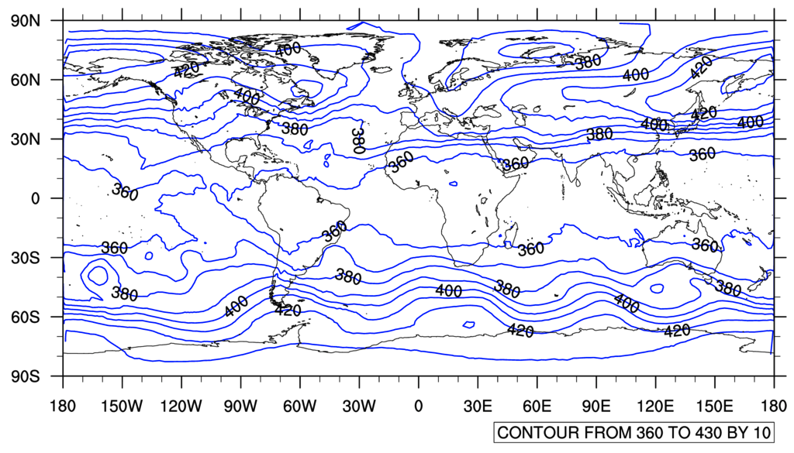
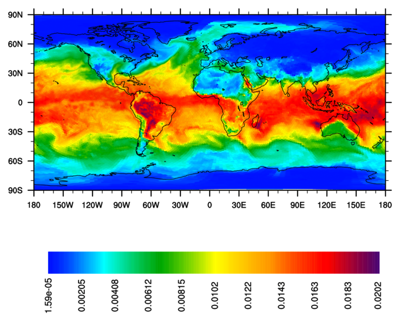
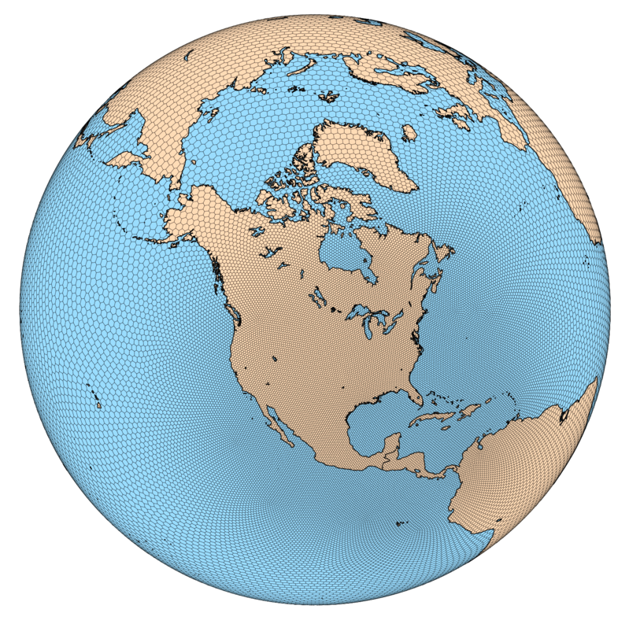
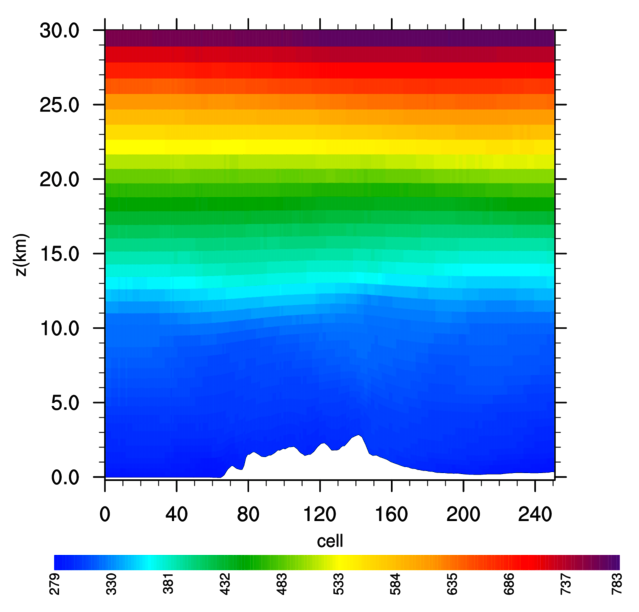

| NCL
scripts |
| The NCAR Command Language
(NCL) is an interpreted language that may be used for plotting fields
in MPAS-Atmosphere's netCDF input and output files. Several example
scripts are provided below as a starting point, and users new to NCL
may consult the extensive NCL documentation for examples and complete
documentation on all functions and resources. |
| MPAS-A users wishing to make
their NCL scripts available for use by
others are encouraged to contact the MPAS-Atmosphere developers
directly via "mpas-atmosphere-help AT googlegroups.com". |
| Standard pressure level plots (850, 500,
200 hPa). These fields are part of the standard model history output. |
| mpas-a_plevel_hgt_temp.ncl |
| mpas-a_plevel_vorticity.ncl |
| mpas-a_plevel_wind_speed.ncl |
| mpas-a_plevel_w.ncl |
| Other standard plots This data is also part of the standard model history output. |
| mpas-a_precipitable_water.ncl |
| mpas-a_olr.ncl |
| Interpolating MPAS output to a latitude-longitude mesh
The unstructured horizontal mesh used by MPAS can often be problematic for some visualization tools to work with, and makes it more difficult to quickly check model input or output fields when trying to track down problems in the model. For these reasons, it can be helpful to interpolate MPAS fields from their native, unstructured mesh onto a regular, rectangular mesh such as a regular latitude-longitude grid. The "mpas_to_latlon.ncl" script is generally run in two stages:
|
| mpas_to_latlon.ncl |
Generic NCL plotting scriptsShown in the table below are example plots from each script; please click on the image to download the script. |
|  Generic horizontal contour plot |
 Generic color-filled cell plot |
|  Mesh plot against a map background |
 Generic vertical cross-section |